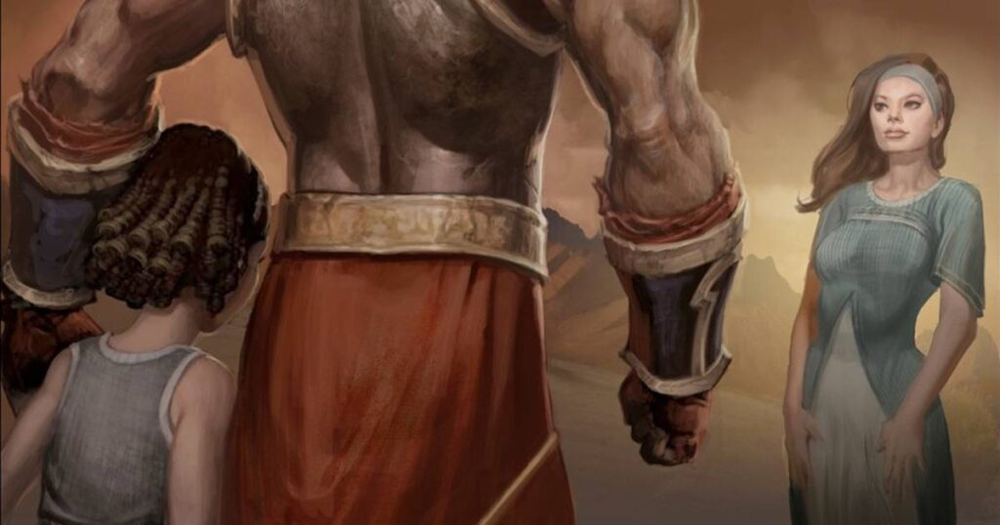

Prólogo
Por: Luiz Schlickmann
![Uma imagem do personagem Kratos, da franquia de jogos God of War. Ele é um guerreiro musculoso, careca, com a pele pálida acinzentada e uma marcante tatuagem vermelha que cruza seu olho esquerdo, peito e ombro. Kratos está posicionado no lado direito da imagem, olhando fixamente para a frente com uma expressão séria. Ele segura uma de suas icônicas lâminas acorrentadas. O fundo é composto por um cenário caótico e enevoado de fumaça, poeira e explosões em tons de marrom, dourado e cinza, sugerindo um campo de batalha.](img-início.jfif)
Muito além de batalhas épicas e combates contra deuses, a jornada de Kratos é marcada por tragédias, vingança e, mais tarde, redenção. Cada jogo acrescenta um novo conflito entre mortal e imortal.
Neste blog, nossa missão é revisitar cada capítulo dessa saga em ordem, explicando os acontecimentos de forma clara, conectando os eventos entre os jogos e explorando da forma mais fiel possível. Se você está conhecendo a franquia agora ou deseja reviver essa aventura, prepare-se para acompanhar a trajetória do Fantasma de Esparta desde seus primeiros passos até os acontecimentos mais recentes. E tudo narrado por este que vos fala.
Nossa jornada começa onde tudo teve início: no primeiro God of War, lançado para PlayStation 2 em 2005.
Capítulo I — O Fantasma de Esparta
Toda lenda tem um começo. Mas algumas nascem da dor.
No início desta história, conhecemos nosso protagonista: Kratos. Um homem de pele cinzenta, marcado por uma cicatriz vermelha. Um espartano. Um guerreiro. Um assassino. Aquele que ficou conhecido como o Fantasma de Esparta.
Consumido pelos próprios pesadelos, Kratos já não encontrava outra forma de se libertar deles. A única saída parecia ser a própria morte. Assim, no topo do mundo, ele se lançou de um imenso penhasco, buscando encontrar, enfim, o silêncio que tanto desejava.
Mas, para entender por que o homem conhecido como Fantasma de Esparta chegou àquele momento, precisamos voltar muitos anos no passado.
Capítulo II — O Juramento ao Deus da Guerra
![Uma ilustração em estilo de quadrinhos mostrando um combate intenso entre dois guerreiros. À esquerda, um guerreiro bárbaro robusto, com cabelos longos e escuros, barba cheia e expressão de fúria, ergue um grande martelo de guerra com as duas mãos. À direita, Kratos, com sua pele pálida e marcas vermelhas corporais, contra-ataca erguendo uma espada curta para bloquear ou golpear, também com uma expressão agressiva e dentes à mostra. Ambos os personagens estão cobertos de poeira e marcas de batalha. O fundo é dominado por uma luz intensa e dourada, evocando um ambiente caótico de guerra sob um sol forte ou explosão.](GOW bárbaros.jpg)
Os humanos sempre serão os servos dos Deuses, mesmo que não queiram.
Kratos, desde pequeno, foi treinado para ser um guerreiro frio e habilidoso, tanto que se tornou o general do exército de Esparta. Mas, mesmo sendo um homem marcado pelo sangue, encontrou o amor. Sua esposa, Lysandra, e sua filha, Calliope, eram as únicas capazes de amolecer o coração daquele guerreiro.
Quando Calliope contraiu uma doença, Kratos partiu em busca da lendária fruta milagrosa conhecida como Ambrósia. Durante sua jornada, enfrentou o exército bárbaro que, mesmo armado com machados e lanças, não foi capaz de derrotar o general espartano. Após obter a fruta, conseguiu salvar a vida de sua filha.
Entretanto, a paz durou pouco. Não muito tempo depois, os bárbaros retornaram em busca de vingança. Os dois exércitos travaram uma longa batalha, marcada pelo sangue e pela destruição.
Mas, pela primeira vez, Kratos encontrou um inimigo que não conseguia vencer. Seu exército caía. Seus homens morriam. E, pela primeira vez em sua vida, o general de Esparta conheceu a derrota.
Num ápice de desespero, já à beira da morte, Kratos clamou pelo nome de Ares, o Deus da Guerra, prometendo sua vida em troca da destruição de seus inimigos.
Ares ouviu o chamado.
Em poucos instantes, o exército bárbaro foi completamente dizimado. Como prova daquele pacto, o deus entregou a Kratos as Lâminas do Caos, prendendo-as eternamente aos seus braços e selando o vínculo entre mortal e imortal.
A partir daquele dia, Kratos tornou-se o mais fiel — e perverso — servo de Ares.
Capítulo III — A Tragédia de Kratos

Os deuses olham. Os deuses mentem. Os deuses matam.
Kratos tornou-se um escravo de Ares. Cumpria todas as ordens do Deus da Guerra, servindo como sua arma de destruição. O homem que antes lutava por Esparta agora representava uma ameaça até mesmo para a própria família. Não havia limites para a violência que espalhava por onde passava.
Como parte de seus planos, Ares ordenou que Kratos atacasse uma pequena vila dedicada à deusa Atena, sua irmã. O objetivo era simples: transformar aquele lugar em um mar de corpos.
Fiel ao pacto que havia firmado, Kratos liderou o massacre. Homens, mulheres e inocentes tombavam diante das Lâminas do Caos. Porém, em meio à carnificina, o destino lhe preparava sua maior tragédia.
Sem que soubesse, Lysandra e Calliope estavam naquela vila apenas de passagem. Dominado pela fúria e pela influência de Ares, Kratos atravessou o templo onde elas buscavam abrigo e, sem reconhecer suas próprias vítimas, matou a mulher que tanto amava e a filha que jurara proteger.
Quando percebeu o que havia feito, já era tarde demais.
Desolado, Kratos viu Ares revelar a verdade. Fora o próprio Deus da Guerra quem levara sua família até aquela vila. Seu objetivo era destruir o último vestígio de humanidade do espartano e transformá-lo no guerreiro perfeito.
A traição era inegável. Ainda assim, nenhuma manipulação apagava a culpa que consumia Kratos. Foram suas próprias mãos que derramaram o sangue inocente.
Naquela mesma vila vivia uma oráculo. Como punição pelos crimes cometidos, ela lançou uma maldição sobre o guerreiro, cravando as cinzas de sua mulher e filha em seu corpo, para que lembre para sempre de seu pecado.
Assim nasceu o Fantasma de Esparta.
Capítulo IV — Dez Anos Servindo ao Olimpo
...